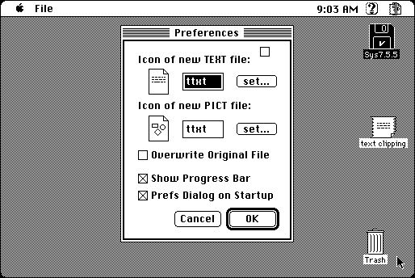

Download
ClippingConverter_1.0E.zip (29K) Clipping Converter 1.0 repackaged into a zipped hfs disk image and checksum file. The disk image can be mounted with Mini vMac.
ClippingConverter_1.0E.hqx (37K) Clipping Converter 1.0 in the original format.
copyright: Takahiro Sumiya
mod date: Mar 14, 1996
license: freeware
last known url
(gone)
Performs conversion between Text File and Text Clipping, and conversion between Pict File and Pict Clipping. “Clippings” are a feature added in Macintosh System 7.5.

If you find these downloads useful, please consider helping the Gryphel Project, which hosts them.
Here are the md5 checksums for the downloads, signed with Gryphel Key 5:
--------- GRY SIGNED TEXT --------- 08177e792210c48f0ec1b0bbcfa504fc ClippingConverter_1.0E.zip d24f01abb48fa681e8fcd55beef9917e ClippingConverter_1.0E.hqx ------- BEGIN GRY SIGNATURE ------- Gry/4Xa8CFcUzxdN/JslXuHFTGQn6kiJKvJr8Rz9963z8k1hbe8th9r3ZhPO605e +bhL090TBkLQzK+SVWclAaJxeolYzC2MFXbJzs7ldmsLgsusHGe8QTNariKwdSC4 T8kirwUpxN7PgnG5JCcjyT8zUF4Oq96xiicFQvDRmzvoKDFyclVRZE8tu2mGNH48 -------- END GRY SIGNATURE --------